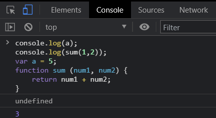
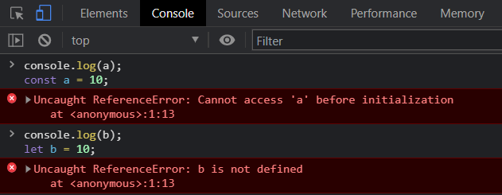

Temporal Dead Zone is a small concept in Javascript which is related to Hoisting. Hoisting is an exclusive feature of JavaScript which is not offered by many programming languages.
To understand Temporal Dead Zone, we first need to get into our head about how JavaScript code is executed, how variables are declared in JavaScript and Hoisting.
How is JavaScript code executed?
JavaScript code is executed in two phases, named:
Memory Creation Phase
Code Execution Phase.
1. Memory Creation Phase: The code is executed from the beginning and only the memory for the global variables and functions are allocated in the main memory. The variables are not assigned values in this particular phase, only the block of memory is assigned to them and they are initialized with "undefined", which is a keyword in JavaScript meaning, no value is initialized to the variable.
2. Code Execution Phase: After reading the whole code once during Memory Creation Phase, the code is again executed from the beginning and this time all the operations are performed which have been coded.
What is Hoisting?
As already stated above, Hoisting is an exclusive feature of JavasScript which not many programming languages provide. In other languages, you can never use a variable before declaring it and you can never call a function before defining it.
But this is possible in JavaScript. Yes, you can use a variable before defining it and you can call a function before defining it. This is possible because of the two-phase execution of the JavaScript code. After the first phase, the program already knows that the variable or function is defined ahead and hence it does not throw an error. So, if you print a variable value before defining it, it will print "undefined".

Variable Declaration in JavaScript
There are 3 keywords using which we can declare a variable in JavaScript. Those keywords are:
var
let
const
I won't be going into the basics of it because the chances of you knowing it already, are quite high and therefore you are here, right?
const is the strictest of all in the list, you can not change the value of a const variable after declaration. var is the lenient amongst all, and let sits between both of them.
Now, if you know all of the above, it won't take much time to understand what Temporal Dead Zone is. Temporal Dead Zone is the period starting when the variable was declared using let or const are assigned their memory block during the first phase of code execution, till the time, the same variable is assigned their actual value during the second phase of the code execution.
During this time the variable is not available for use, it will give a "Reference Error" stating that the variable can not be used before initializing its value.

But this is not the same when you declare a variable using the var keyword, the user can use this variable in its Temporal Dead Zone, but the value of the variable will always be "undefined" in its Temporal Dead Zone.